Tools Yang Digunakan
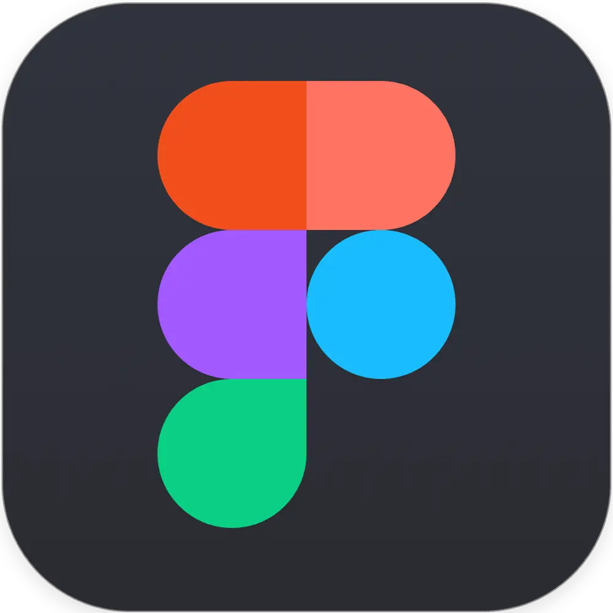
Figma
Figma adalah platform yang digunakan untuk membuat desain. Umumnya, Figma biasa digunakan untuk membuat konsep halaman website, atau bisa juga untuk desain grafis sosial media.
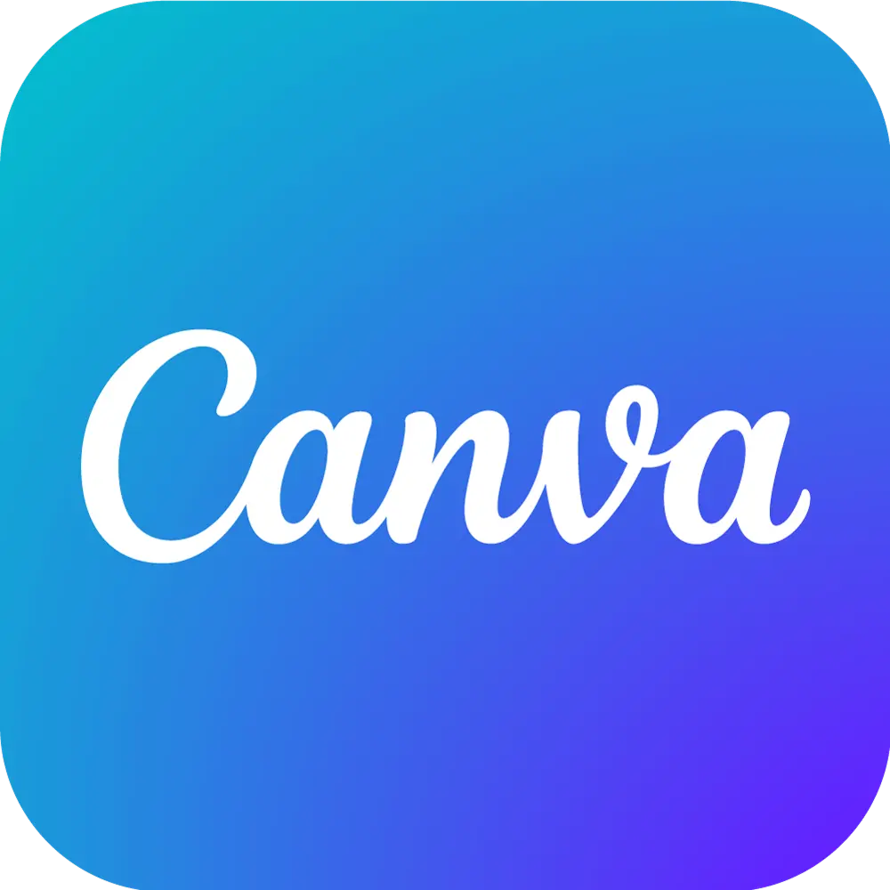
Canva
Canva adalah platform untuk membuat desain grafis. Platform ini cocok untuk beginner karena dengan Canva, user dapat dengan mudah dan tanpa ribet membuat berbagai desain yang diinginkan. Canva biasa digunakan untuk membuat postingan sosial media, presentasi, dll
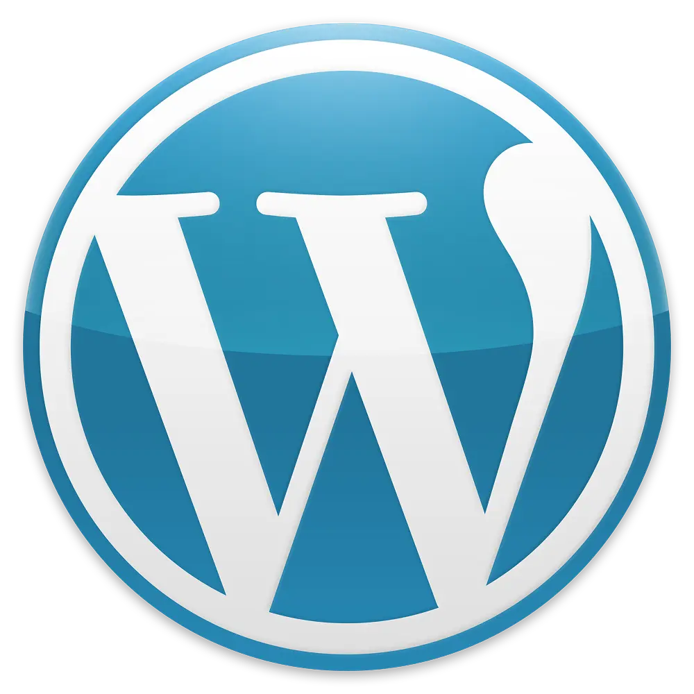
WordPress
WordPress adalah sistem manajemen konten open-source yang memungkinkan kita untuk membuat, mengelola, dan mempublikasikan website dengan mudah tanpa perlu ahli dalam pemrograman. Pada tugas saya, saya hanya berfokus pada mengupload artikel baru.
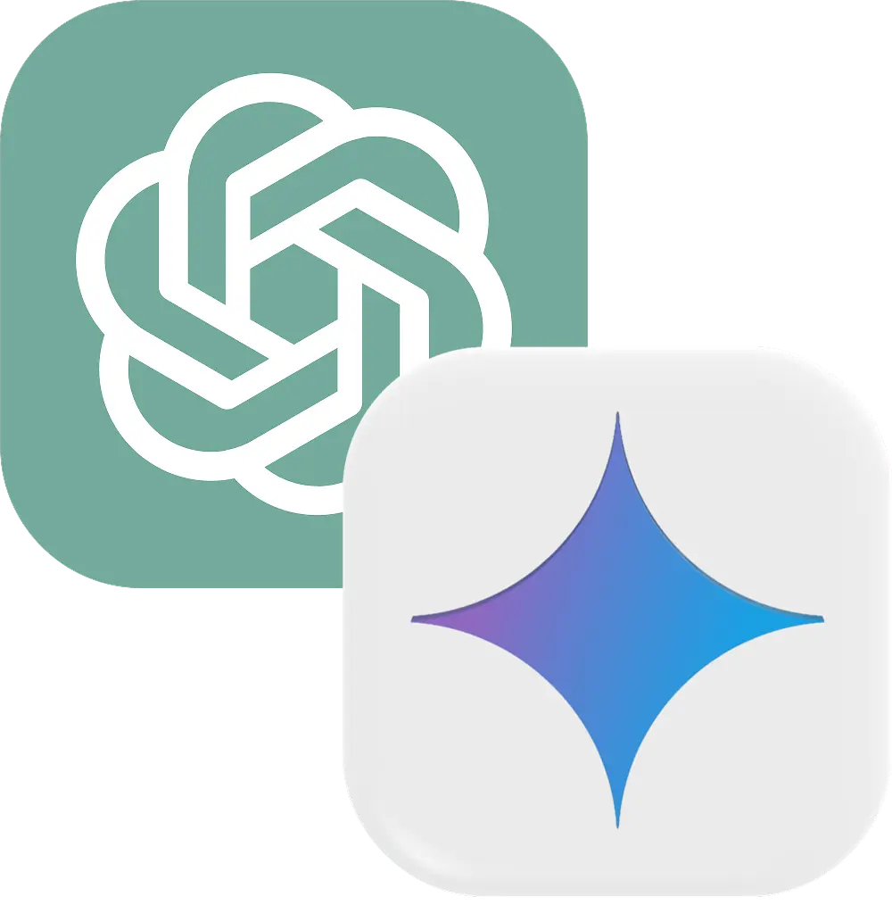
ChatGPT & Gemini
ChatGPT & Gemini adalah platform sekaligus tools artificial intellegence (AI) yang digunakan sebagai assisten user dalam melakukan berbagai hal, seperti menjawab pertanyaan, analisis data, memecahkan suatu masalah, pemrograman, membuat video atau gambar, dan masih banyak lagi.
Tugas-Tugas
1. Membuat Artikel Komunitaskami
Tugas pertama saya adalah membuat 8 artikel per hari yang diupload pada website https://komunitaskami.com/, dengan berdasarkan postingan Instagram milik perusahaan atau client yang dipilih. Untuk isi dan gambar artikel menggunakan AI ChatGPT dan Gemini, yang dimana artikel yang dibuat harus ada AEO (Answer Engine Optimization).
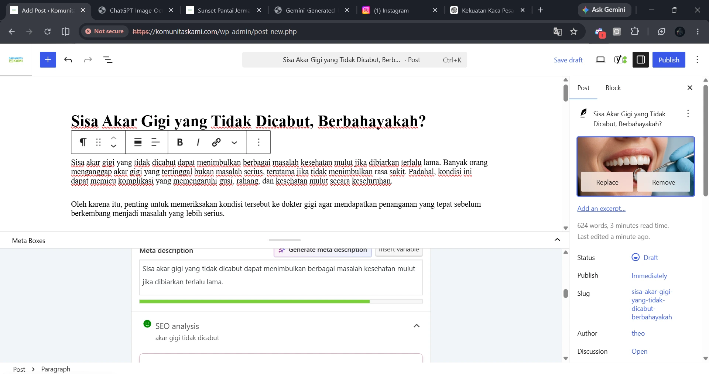
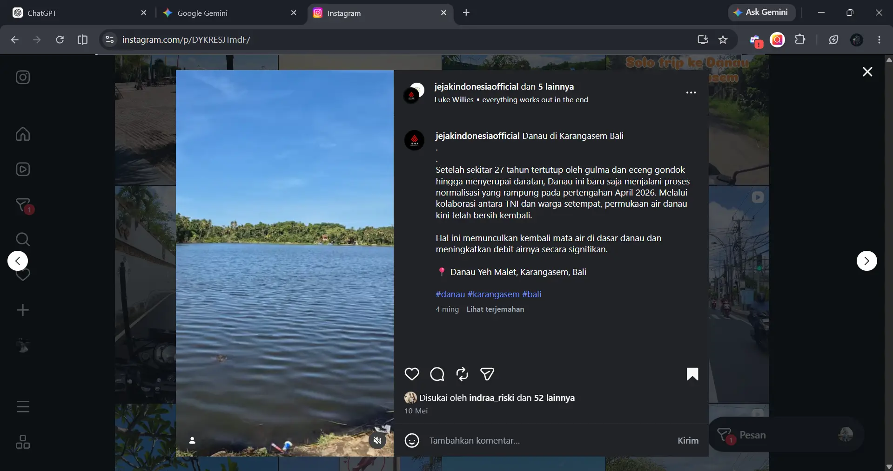
2. Membuat Fanpage & Postingan Facebook Untuk Promosi
Tugas kedua saya adalah membuat fanpage facebook di akun pribadi saya, yang bertemakan aviasi atau penerbangan, yakni digunakan untuk mengupload postingan per hari sambil mempromosikan produk perusahaan bernama FIDSSA http://fids.groundhandling.systems/ dengan caption dan isi dalam bahasa Brazil.
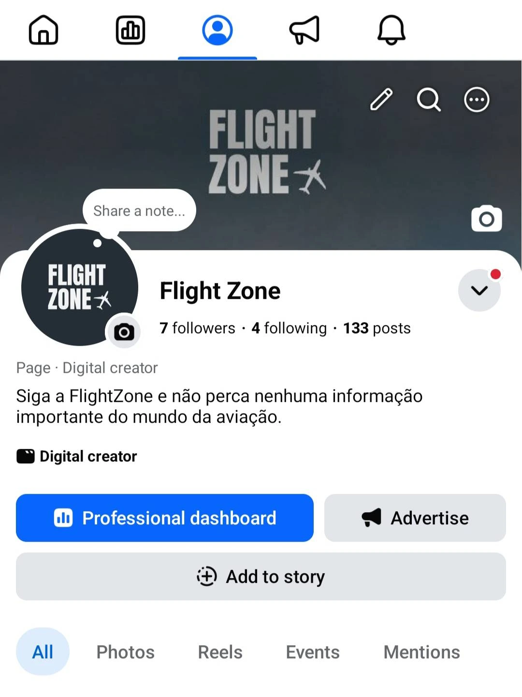
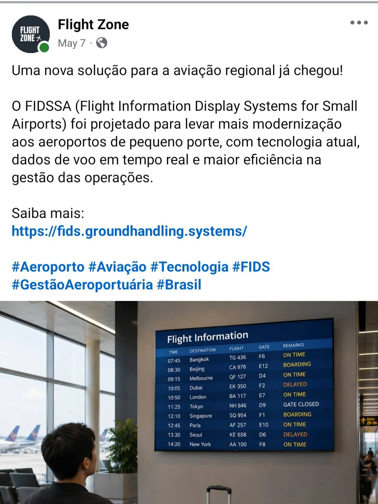
3. Mengirim Proposal Kami Creative
Tugas ketiga saya adalah Mengirim Proposal Kerja Sama dengan Kami Creative ke 15 Cafe atau Coffee Shop atau FnB per hari, yang dimana jika ketemu, saya harus mencari Gmail atau Whatsapp yang bisa dikontak untuk nantinya mengirimkan pesan beserta file proposalnya.
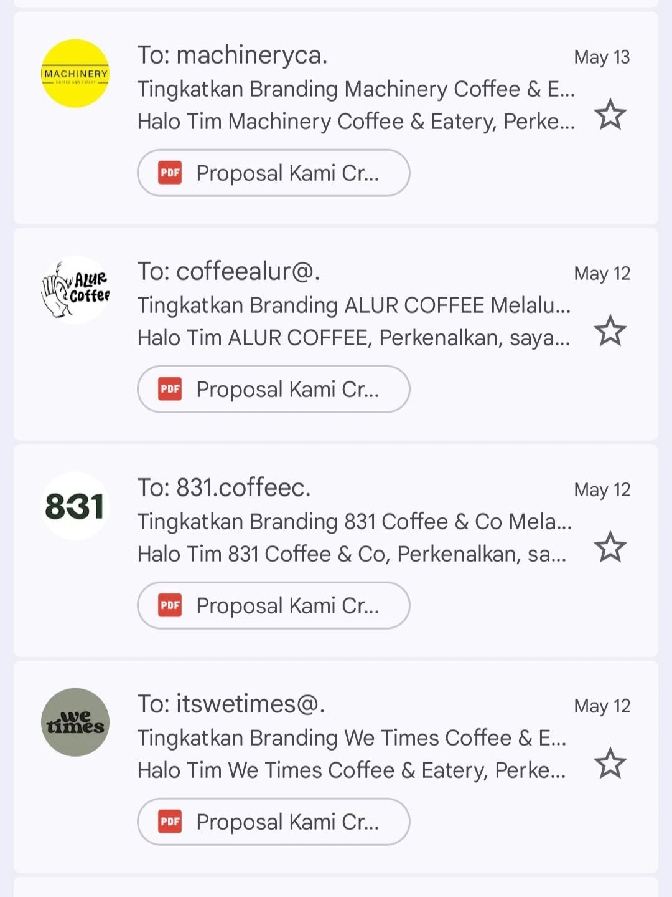
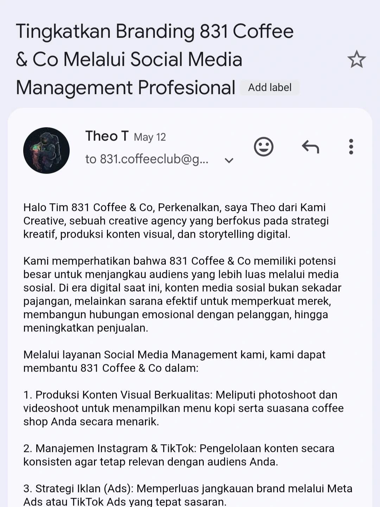
4. Membuat Desain Postingan Telemedia Creator
Tugas keempat saya adalah membuat desain post untuk instagram Telemdia Creator dimana isi postingan harus berdasarkan 5 pilar konten: Awareness, Edukasi, Engagement, dan Soft Selling/Trend.
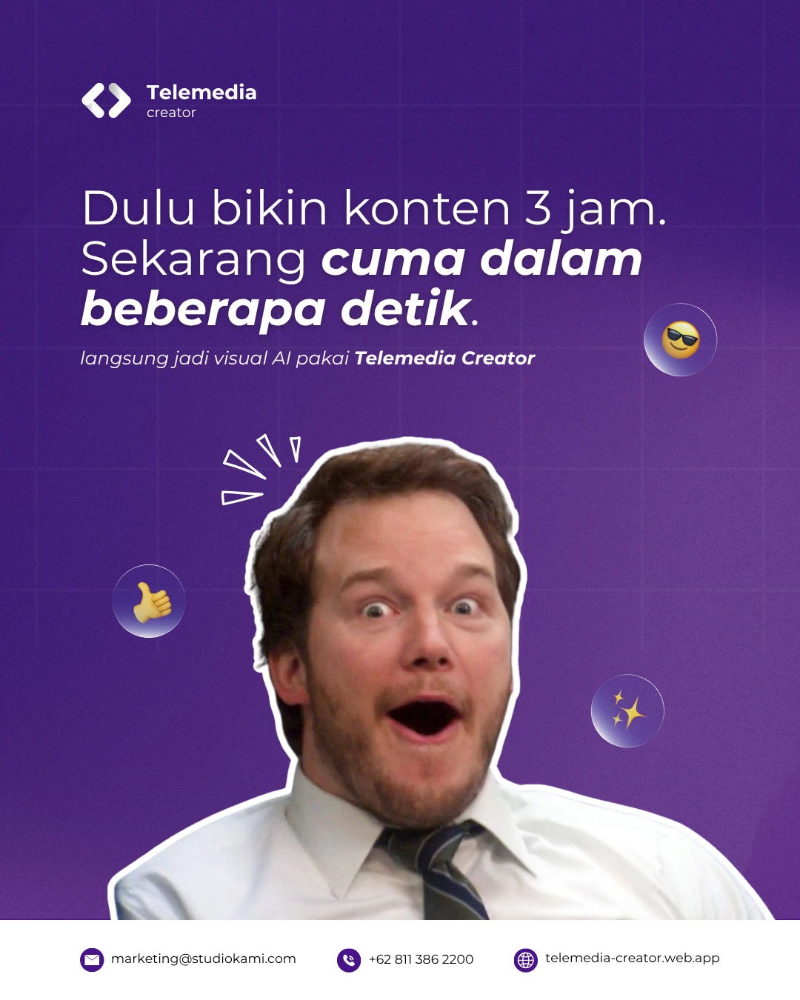
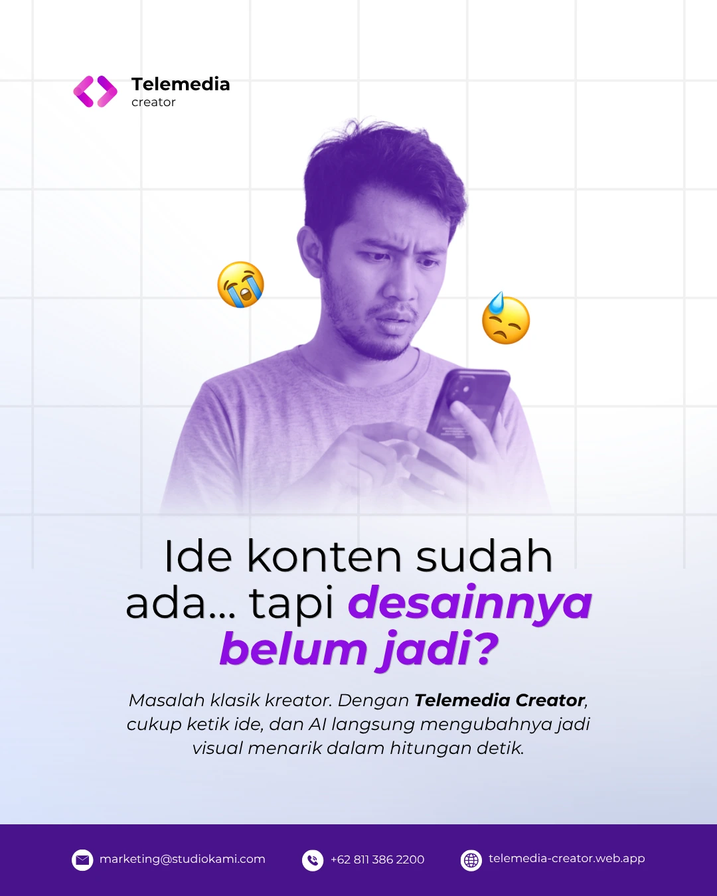